Table of Contents
Table of Contents
 Previous Chapter
Previous Chapter
Table of Contents
Previous Chapter
The Meta-AQUA system implements the theory of introspective multistrategy learning presented in the previous chapters by providing a computational realization of the concepts within the theory. The project of building this implementation has been especially challenging. Not only does the Meta-AQUA system, like many other programs, have a performance system that manipulates an explicit representation of the world, but in addition it has a learning system that analyzes and learns from the results of the performance. These results, along with a trace of the performance itself, must also be represented explicitly. Moreover, the system uses three different representational formalisms: frames, CDs, and predicate logic. The implementation is hence naturally complex.
As a result of the system's complexity, deliberate decisions were made to implement only the most significant portions of the theory within the Meta-AQUA program. For example, the memory system in Meta-AQUA is not a full model of human memory. Instead, it is a rough approximation to the indexed dynamic memory as described in Schank (1982). Although the implementation of the memory is crude compared to the elaborate functionality of similar memories in other programs (e.g., CYRUS - Kolodner, 1984; DMAP - Martin, 1990; ANON - Owens, 1990a; SMART - Veloso & Carbonell, 1990), it still is a better cognitive model of memory than those using exhaustive search (e.g., FUNES - Markovitch & Scott, 1988).
Also, as a matter of pragmatics, the Meta-AQUA implementation does not assume that all possible causes for failures enumerated in Chapter IV can occur. Instead the program restricts the number of causes it considers during blame assignment.(1) Although future research intends to expand the scope of blame assignment, the current implementation still far exceeds the number of causes that related computational systems entertain. For example, the MINERVA learning system (Park & Wilkins, 1990) is a theory revision system similar to Meta-AQUA in its use of explanation and introspection. However, because MINERVA assumes a consistent knowledge base, brute force search, no input, perfect processes, and well-behaved goals, missing domain knowledge is the only possible cause of failure. By making such assumptions, the blame-assignment task is circumvented altogether. All failures are attributed to missing pieces of domain knowledge in its background knowledge.
A few minor differences exist between IML theory and the embodiment of the theory in the Meta-AQUA system. These discrepancies will be made explicit in this chapter. Notwithstanding these differences, the implementation represents a substantial undertaking and will be examined in some detail. The initial section (8.1) outlines Meta-AQUA's system architecture and its file system. Subsequent sections examine the performance subsystem (8.2), the input problem generator (8.3), the memory system (8.4), and the learning subsystem (8.5), each in turn. Examples of the running behavior of the system when processing automatically generated input stories (rather than hand-coded stories) illustrate many sections throughout. The final section (8.6) closes the chapter with a summary and a brief discussion.
Meta-AQUA is a learning system that chooses and combines multiple learning methods from a toolbox of algorithms in order to repair faulty components responsible for failures encountered during the system's performance task. The program incorporates an introspective version of the AQUA (Ram, 1991, 1993, 1994) story-understanding system as the performance task from which learning can take place. As a front end module to the performance system, a specially modified version of the Tale-Spin (Meehan, 1981) story-generation program automatically produces input data. At the back end, the UM Nonlin planning system (Ghosh et al., 1992) creates a learning plan designed to improve the performance. An extensive frame system (Minsky, 1975; Wilensky, 1986b) was built to provide the formalism with which to represent the system's knowledge, both of the domain and of itself. This knowledge is stored in and retrieved from a simple indexed memory. The memory is partitioned into a working memory (FK) and a long-term store (BK).
The system architecture and flow of information within Meta-AQUA is shown in Figure 70. The problem generation module outputs a story to the performance system with the initial goal to understand the input (i.e., build a coherent conceptual interpretation). The story understanding system uses schemas from the BK to build a representation of the story in the FK. If this task fails, then a trace of the reasoning that preceded the failure is passed to the learning subsystem. A CBR subsystem within the learner uses past cases of introspective reasoning from the BK to explain the failure and to generate a set of learning goals. These goals, along with the trace, are then passed to a nonlinear planner. The planner subsequently builds a learning strategy from its toolbox of learning methods. The learning plan is then passed to an execution system that examines and changes items in the BK. These changes enable improved performance in subsequent processing.
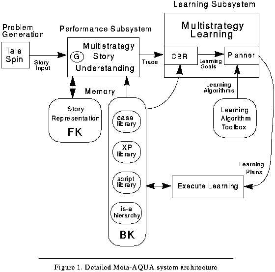 Figure 70. Detailed Meta-AQUA system architecture
Meta-AQUA is programmed in Symbolics Common LISP under the Genera operating system (Version 8.3). The hardware platform is a Symbolics MacIvory Model-3 LISP microprocessor embedded in a Macintosh IIci personal computer. Including comments and documentation, the LISP source code takes up approximately 750 kilobytes of disk space in sixty-seven files. The file system definition is pictured in Figure 71.(2) Two of the modules (frame and non-lin) are stand-alone subsystems each of which have their own defsystem constructs. The four other modules are native to the Meta-AQUA system. The five main modules (not including documentation) each have a separate symbol package. The following subsections describe each of the major subsystems in turn.
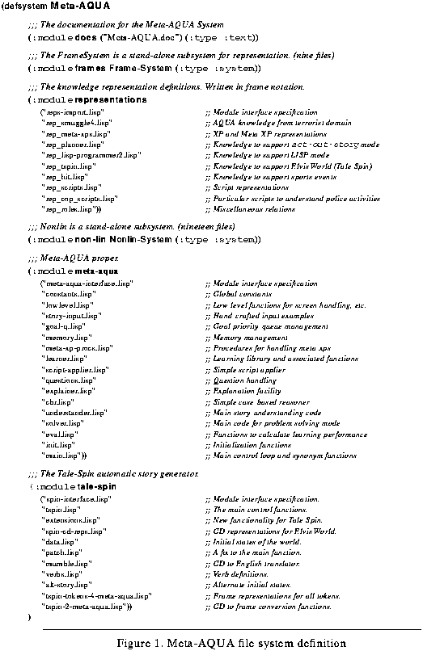 Figure 71. Meta-AQUA file system definition
The AQUA program is a question-driven story understanding system whose task is to explain terrorist activities and events contained in newspaper-like stories provided as input. The Meta-AQUA system learns about drug-smuggling activities, given AQUA's prior experience with stories about terrorists. Both systems' performance task is to "understand" stories by building causal explanations that link the individual events into a coherent whole.(3) Meta-AQUA adds introspective reasoning and multistrategy learning using Meta-XP structures and the learning theory presented in parts Two and Three of this thesis. In addition and unlike AQUA, the performance sub-system of Meta-AQUA uses a multistrategy approach to understanding. Thus, the top-level goal is to choose a comprehension method by which it can understand the input.
To process input information, the system posts all performance goals and learning goals in a priority queue. These goals are then processed by the current priority value such that the highest value is pursued first. For instance, when a new conceptual input arrives, a goal to understand the input is placed in the priority queue with a nominal value. If no other goals have higher values, then the comprehension goal will be taken from the queue and processed. The goal to understand an input is then made into a subgoal to detect an anomaly in the input.
For the task of story understanding, Meta-AQUA employs an algorithm whose flow of control is outlined in Figure 72. First, the outer loop inputs a sentence representation and checks to see if the concept can answer a prior question. If it can, the reasoning associated with the question is resumed. Otherwise, the concept is passed to the understanding algorithm. The understanding algorithm consists of three phases: anomaly identification, hypothesis generation, and hypothesis verification.
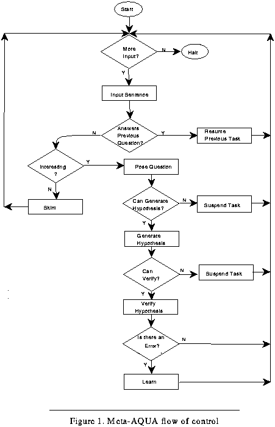 Figure 72. Meta-AQUA flow of control
The first phase looks for questions associated with the concept by checking the concept for interesting characteristics. Meta-AQUA considers acts of sex, violence, and loud noises inherently interesting (Schank & Abelson, 1977). Moreover, any concept that is anomalous is considered interesting (Ram, 1990b), as is any concept about which the program has recently learned something. Inherently interesting acts are detected by the concept type of the input. Anomaly checking is performed by comparing the input to the conceptual definitions found in the conceptual hierarchy. If a concept contradicts a constraint, an anomaly exists and a question is posed. Such a question represents a fundamental learning goal (or more specifically, a knowledge acquisition goal). The goal is to construct or otherwise acquire an explanation of why the anomaly exists. If no anomaly is detected, the concept is skimmed. Control then passes back to the beginning.
When an input is skimmed, it is passed to a simplified version of SAM, a script application program (Cullingford, 1978, 1981). The script applier understands a story by matching input sentences to stereotypical sequences of events (i.e., to scripts). For example, the simple drug-bust script consists of an initial drug detection, then confiscation of the contraband, followed by the arrest of the person possessing the drugs. Although scripts omit many of the causal relations between events in a story, they can help an understander interpret a story by providing details not explicitly mentioned in the story. During the skimming process, however, if an input is not matched with a script, then the input is placed on a list of current story structures in the FK to await further processing.
As an example of the role scripts play in the input to the understanding process, consider the following. The pipe-smoking-script contains an instrumental scene (gain-control-of-object) that establishes the preconditions (possession of a pipe) necessary for the goal scene (smoke-pipe) of the script. The instrumental scene itself has sub-scenes that must be matched to the input, some of which in turn may have additional sub-scenes. They include the sub-scene open-container (if the pipe is in the cupboard), an ATRANS (to transfer possession to the smoker), and close-container. But in the event of a match, not only are the sub-events which came from the story examined by the understander to detect anomalies, but the inferred gain-control-of-object structure is input for anomaly detection as well.
Rather than skimming the input, the system may examine it in more detail by posing questions about particular parts of the input. If a question is posed, the understander attempts to answer the question by generating a hypothesis. The basis of the decision to pose a question (i.e., what knowledge is relevant in making the determination) is then recorded in a TMXP. Strategies for hypothesis generation include application of known explanation patterns ("XP application"), case-based reasoning, and analogy. If none of these methods applies, then the process is suspended until a later opportunity presents itself.(4)
After a hypothesis is generated, the potential answer passes to the verification phase of the performance task. Strategies for hypothesis verification include devising a test (currently not implemented), comparison to known concepts, and suspension of the reasoning task. Following this, the system reviews the chain of reasoning during the verification phase to detect failure. The failure detection process examines the reasoning trace using the algorithm described by Figure 47 on page 121. If a failure occurs, then control passes to the learning subsystem and further input processing is suspended until control returns.
Input to the performance system can originate in two different ways. Hand-coded stories provide explicit demonstrations of specific features of the IML learning algorithm. A number of these stories (e.g., HC1 and HC2) have been discussed in previous chapters. In addition, a modified version of the Tale-Spin (Meehan, 1981) story-generator was integrated into the Meta-AQUA architecture to produce stories automatically. The function of a separate generator is to attenuate the bias of the programmer who creates hand-coded stories and to provide a means for randomly varying the conditions under which learning takes place. These two conditions provided by the generator have enabled the design of an empirical study that will be reported in the next chapter.
Given a main character and a problem for the character, the Tale-Spin module creates stories by simulating the actions that would be necessary for the character to achieve goals stemming from the problem. For example, if a character has the problem of being thirsty, Tale-Spin assigns the character an initial goal to remove a state of thirst. The character can achieve the goal by travelling to where water or drink exists if the location is known. If it is not known, the character can ask another agent in the story. The character then gains possession of the drink and finally ingests it. At selected points, the generator inserts random events into the story. For each event in the story, the generator adds any associated causal results from the event. These results change the world and enable further actions by the characters in the story. For example, the act of travelling to the location of water enables the taking possession of it which in turn enables the drinking of it. This final action removes the hunger. The story terminates when the goals and subgoals of the main character have been achieved or when all possible plans to achieve them have been exhausted.
The Tale-Spin program was obtained from the University of California at Irvine(5) where it is used as a problem generator for the OCCAM learning system (Pazzani, 1994). OCCAM learns about physical causation given stories in which characters perform actions such as playing ball when bored. So for example, when children accidentally drop a solid ball, it will not break; whereas, when children drop a balloon upon a sharp object (e.g., a rose bush), the object will break. In this case, OCCAM learns the causal interaction between object composition and surface impact. In OCCAM's world, four main characters exist. They are Dad, Mom, and their two children Lynn and Lynn. The problems that they encounter are hunger, thirst and boredom. In addition, the house contains a cat who randomly knocks vases from tables to the floor. Given these initial program conditions, Tale-Spin was extended to produce stories in the domain of criminal activities.
In order to support large data collection, additions to Tale-Spin provide numerous scenarios with a potentially infinite number of variations that test Meta-AQUA's ability to learn from explanation failure. Among the changes, a musician named Elvis and a police officer were added to the cast of characters. Elvis is temporarily boarding with Mom, Dad and family, whereas the officer occasionally visits the house, presumably because of neighborhood complaints of loud music and raucous behavior. Furthermore, the police officer often (but not always) brings a drug-detection dog along with him, and the domestic household now contains a pet dog.
Two new problem types were also added. Characters may be jonesing(6) for drugs. In Elvis' case, he sometimes smokes marijuana to relieve his jones, whereas Dad occasionally smokes a pipe with tobacco (see Figure 15 on page 43). Lynn has also been given a tobacco habit. The police officer has the problem of being concerned about the law. The state of being concerned is relieved if he can either locate contraband or arrest criminals.(7) The program was also modified to hide the marijuana during story initialization in different locations around the house (e.g, in the cupboard, refrigerator, and under the carpet), so the officer's task varies depending on entry conditions (i.e., at what point in the story the officer arrives on the scene and whether the dog accompanies him), the initial location of the pot, and the actions of the characters in the story.
Moreover, to facilitate the performance task, the Tale-Spin program was modified so as to generate explanations of key events in the stories. The resolution of all anomalies are thus incorporated within every story. For example, Tale-Spin always includes a reason why police dogs bark when generating a story. Although in an ideal implementation, the understanding process should be able to make powerful enough inferences to confirm explanations of the input independently, the performance task has been simplified within Meta-AQUA. Instead of using inference to confirm hypotheses, Meta-AQUA mainly depends on the story to provide explanations that confirm them. For the implementation, the research goal is to concentrate on the learning task rather than the understanding task.
An example of Tale-Spin output is shown in the story TS1 of Figure 73. The example is roughly equivalent to the hand-coded story that Chapters VI and VII examined in detail (i.e., the airport drug-bust story, HC1, shown in Figure 52 on page 140). Figure 74 shows the specific sentences of story TS1 that correspond to the sentences of story HC1. Unlike the hand-tailored stories, however, the length of Tale-Spin's stories range from 3 to 108 sentences and average approximately 30.
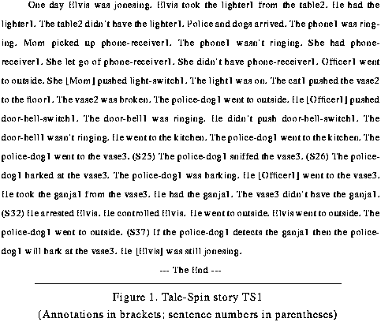 Figure 73. Tale-Spin story TS1
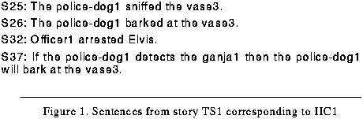 Figure 74. Sentences from story TS1 corresponding to HC1
Unlike AQUA, the Meta-AQUA story understanding subsystem does not actually parse the sentences from an English representation. Because the focus of this research does not center on the natural language understanding problem, Meta-AQUA assumes that input sentences are already represented conceptually (i.e., Tale-Spin pre-parses them). The mumble module of Tale-Spin provides stylized English paraphrases to assist the system user.
As seen in Figure 75, the interface between Tale-Spin and the performance system is simple. The spin function of Tale-Spin takes a character and problem to generate a CD representation of the story. The mumble function generates the English equivalent of the CD conceptual representation. Both of these outputs are then placed on the global variable *ALL*. This variable is a list of tuples of the form <CD "generated equivalent text">. A translation routine (function convert-story) then converts the CDs into a frame representation used by Meta-AQUA. The result is placed on the global list *Story-Concepts*. This structure is a list of tuples of the form <frame "equivalent text">. Then for each input concept, the function init-goals creates a knowledge acquisition goal to understand the concept. The function places each goal on the *Goal-Queue* priority queue. In turn, the performance system evaluates each input, places the interpreted result on the variable *World-Model* (so it can easily be displayed at the end of the program as output), and indexes the result in the FK.
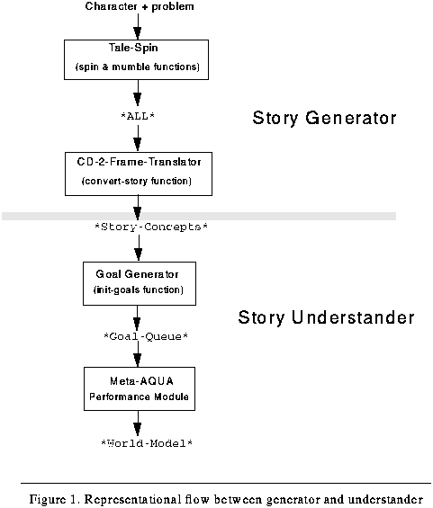 Figure 75. Representational flow between generator and understander
Before we examine the memory system, it should be made explicit that although there is a tight interface between the Tale-Spin story generator and the Meta-AQUA story understanding subsystem, the implementation of and theory behind the Tale-Spin generator in no way reflects the content or claims concerning IML theory. On the contrary, the manner in which input is created for the performance system is largely incidental to the theory and the implementation of the rest of the Meta-AQUA system. Meehan (1981) asserts that stories should be both interesting and coherent. Interesting stories set up a focal problem domain that span a number of levels. Coherent stories contain rational characters that pursue individual goals that then interact. Moreover, Meehan claimed that story simulation itself was a form of cognition (p. 203). None of these theoretical underpinnings directly impinge on the theory of learning presented here. We do not subscribe to nor refute any such claims. The program is used simply as a matter of computational convenience and to generate less biased input.
Computer memory is often viewed as a virtually error-free medium in which retrieval of data is performed by simple fetch operations. As computer memories grow, however, brute-force search for the address to perform the fetch becomes increasingly intractable. Memory indexing is added in order to make memory retrieval more efficient. A memory-indexing mechanism is a trade-off between time to search and accuracy of retrieval; though efficiency is gained, poor indexing schemes risk not finding the proper information. Indexes are pointers from some feature in the environment (cue) to a memory element associated with that feature.
The memory for Meta-AQUA is partitioned into two indexed memories: a working memory called the foreground knowledge, or FK, and a long-term store called the background knowledge, or BK. The BK used in the current implementation consists of a multiple-inheritance conceptual hierarchy, a case library of past episodes, a set of story scripts, and an indexed collection of XPs. The FK is a dynamic list of structures representing the current understanding of the story or "world model." Although both memories are implemented as lists of LISP symbols that have particular values, all processes other than printing and bookkeeping functions access memory by matching the cues chosen at retrieval time with the indexes created at storage time.
This section explains the representation used for items stored in memory (Section 8.4.1), describes the implementation used for indexing items in memory and in retrieving them (Section 8.4.2), and works through a short story that Tale-Spin generates in order to demonstrate the advantages of opportunistic memory in the Meta-AQUA system (Section 8.4.3). The representation, indexing scheme and the structure of the memory subsystem allows the generation of multiple hypotheses and their respective verification to be interleaved in arbitrary order. The example also shows that Meta-AQUA can benefit from learning even before it is finished processing the story in which the learning takes place.
The distinction between a type and a token is an important difference maintained in Meta-AQUA's memory. Types represent conceptual categories and are defined through the frame-based knowledge-representation system underlying the Meta-AQUA program. Tokens are instantiated instances (reified types). For example, Meta-AQUA's BK contains a type definition associated with the act of barking by dogs. This type captures in general the assumed constraint that dogs bark at animate objects (see page 56 for an abbreviated type definition for dog-barks). Contrastingly, as Meta-AQUA receives input, it instantiates a token for the each event or assertion, including the episode of a particular dog barking at a particular inanimate object. These tokens are incorporated into retrieved cases, scripts, or XPs and stored in the FK.
A token is represented in memory as a frame variable. A frame variable is a unique LISP symbol, such as the gensym XP-GOAL-OF-OUTCOME->ACTOR.115.(8) The symbol value of a frame variable is either a frame form or a literal frame. A literal frame is an arbitrary structured symbol-value, whereas a frame form is represented as a list consisting of a frame-type designator followed by zero or more slots (see Figure 76). Literals are distinguished from other frame variables in that routines which traverse frame structures cannot inspect or otherwise traverse a literal.(9) Slots are attribute-value relations (sometimes called slot-filler pairs) having a particular name (i.e., the role of the slot) and an arbitrary number of facets. A distinguished facet for every slot is the value facet, representing the role-filler (or simply filler) of the slot. Facet values may be either an attribute value, a frame, or list of frames. Attribute values are special terminal frames that specify a member of an enumerated set. For example, green.0 is an attribute value of the enumerated type color-value. It fills the value facet of a color slot and evaluates to the slotless frame form "(green)". As mentioned in Section 4.4, slots themselves are treated in the frame system as a first-class objects, and thus have explicit frame representations (see Figure 25., "Relations as first-class objects," starting on page 81). Thus, the relation facet has as its filler a frame representing the attribute-value relation.(10)
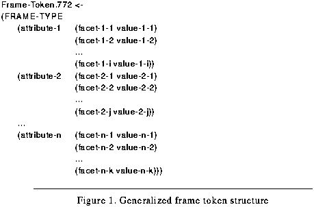 Figure 76. Generalized frame token structure
A special property of the knowledge representation system is that type definitions (categories) are stored as the symbol values of the frame-type designator. As a result, every token has close proximity to its corresponding type. Given a frame token as shown in Figure 76, the type definition can be found by taking the symbol-value of the symbol 'FRAME-TYPE. Thus in general, to find the conceptual definition of an arbitrary frame variable, X, the LISP call (symbol-value (first (symbol-value X))) will suffice.(11)
Conceptually, an index is a mapping from a context to a memory item. Indexes describe a situation in a story or in reasoning about a story and are typed according to the role they play in reasoning. Depending on the index type (question-type.0, xp-type.0, case-type.0, or plan-type.0), indexes map to different conceptual memory items (questions, xps, cases and plans, respectively). In Meta-AQUA, each index is composed of simple chains of micro-indexes (see Bhatta, 1995; Kolodner, 1993, pp. 193-245; and Owens, 1993 for descriptions of more sophisticated index implementations).
For example when processing story TS1, Meta-AQUA poses the question "why did the dog bark at the vase?" It hypothesizes that the vase somehow threatens the police dog, but because it cannot verify this, the system suspends the deliberation and indexes the question into memory. The index used to store the question is an index of type question-type.0 based on a dog being the actor of the barking event and vase being the object. The choice of features is determined by the path along which the anomaly is discovered in the input structure. When it later examines the explanation that the dog barked because it detected drugs, the input causes a reminding that resumes the prior verification process. The composition of these types of indexes is shown in Figure 77.
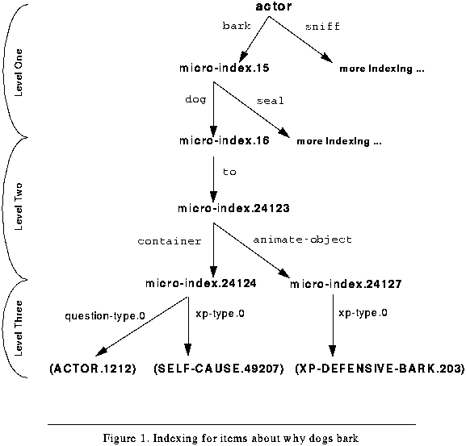 Figure 77. Indexing for items about why dogs bark
Indexing structure in Meta-AQUA is composed of three levels. The primary level of all indexing is specified by the triple <relation, predicate, value>, that is, by a relation, the relation's domain, and the relation's co-domain. An example triple would be <actor, bark, dog>. In fact, the actor relation is an important and salient relation in general because it answers the question "who did what?" The relation distinguishes, for example, explanations for why dogs bark from those explaining why seals bark. As seen in Figure 77, this index level is represented by placing a micro-index on the bark property of the actor symbol. A micro-index is simply a "gensym"(12) that is guaranteed to be unique. The micro-index is then given a dog property whose value points to the next level of indexing.
A second level of indexing is specified by zero (or more) slots of the original relation's predicate. Each slot is represented by the tuple <role value>. For each slot, the index requires two micro-indexes. The first (i.e., role) represents the name of the slot. The second (i.e., value) represents one of three conditions. If the role-filler is an attribute value or literal, it represents the frame-value of the filler. If the role-filler is a relation, it represents the frame-type of the domain of the relation. Otherwise, it represents the frame-type of the role-filler. As an example, consider the object at which a dog barks. The filler of the to slot is the relation at-location whose domain is a container token. Thus, the index tuple is <to container>. See the level two portion of Figure 77.
The final level of indexing specifies the index type. That is, the index specifies the kind of memory at which it points. At the end of a sequence for an index, the retrieve or store (index) routine looks at or sets the memory-type. This level is represented with a final micro-index whose property is one of the following: either question-type.0, xp-type.0, plan-type.0, or case-type.0. The value of the property will be the element (or a list of elements) stored in memory (e.g., an XP for indexes of type xp-type.0).
The function do-index is the major memory storage function of Meta-AQUA. It takes a memory item to be indexed, the item's type classification, and a relation that serves as context for the mapping, and returns an instantiated index frame that represents the index. As a side-effect, it places the memory item in conceptual memory via the micro-indexing implementational scheme described above. Optionally, the memory item may be placed in conceptual memory along with any other structures that happen to be there, or it may overwrite what is already there, depending on the caller of the function. That is, destructive storage is optional.
In addition, every memory item added to conceptual memory through indexing is placed on a "retrieval list" for finding similar items when storing. Before a new item is indexed, the memory system performs a check on the retrieval list for the memory item's type to see if there already exists an item that is of this type. This action simulates a reminding at storage time so that the memory system can find forgotten or lost memories. This feature is necessary for forgotten goal and missing association errors. To make these features more concrete, the next section examines a specific example of opportunistic remindings. See also Section 8.5.4, "Forgetting a Learned Explanation," starting on page 203.
Consider the short story generated by Tale-Spin, TS2, as shown in Figure 78.(13) Given that Meta-AQUA believes that playing is constrained to children and that people hit or strike animate objects when they wish to hurt them, TS2 will generate a number of anomalies. When sentence S8 states that Dad plays with a ball, Meta-AQUA detects an anomaly because the token conflicts with its conceptual definition of playing. That is, it expects only children to be actors of playing events. Likewise, S9 conflicts with its knowledge of what kinds of objects people hit. People hitting animate objects cause Meta-AQUA to explain the action. The first anomaly will cause Meta-AQUA to reach an impasse because it does not have any explanation for why people play. The second anomaly will cause Meta-AQUA to hypothesize that Lynn wanted to hurt the ball. Neither of these anomalies can be resolved, so the program suspends them both in the BK. The first is indexed under adults who play with balls, whereas the second is indexed by children who hit animate objects.(14)
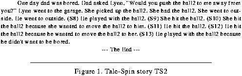 Figure 78. Tale-Spin story TS2
The story now supplies an explanation for why Lynn hit the ball in sentence S10. When this explanation arrives, it causes a reminding of the previous question "Why did Lynn hit the ball?" It finds this previous question in the BK and re-establishes it in the FK. The old question is located because the EXPLAINS node of the input XP (i.e., its consequent) is the hitting event that matches the index under which it was previously stored.(15) The explanation contradicts the expectation that Lynn wanted to hurt the ball, so as with the learning episode presented in Chapters VI and VII, Meta-AQUA is able to learn the new explanation, loosen its constraint on the objects at which people hit, and differentiate the two hitting explanations by re-indexing them with respect to each other.
As a result of this learning experience, when the program processes sentence S11, the concept is no longer anomalous. However, it is interesting to the system because it had recently learned about people hitting animate objects. This causes Meta-AQUA to explain the action. Instead of retrieving the old hurt explanation, the system applies the new explanation which is now indexed by person-hit-toy-object. The explanation is verified when S12 is encountered. Thus, not only does Meta-AQUA not repeat a failure, but it predicts the correct explanation before encountering it. Finally, when sentence S13 is processed, the system simply acquires the new explanation.
Story TS2 is significant for at least two reasons. For all three of the events (one play and two hit actions), the explanations for why the actors performed the action are given in the story, but they come at different points in the story. In particular, the explanation that answers why Dad plays with toy balls comes after the explanations for both hitting events even though the question "Why did Dad play with the ball?" was formed first. Opportunistic memory allows individual questions to be processed independently of the order in which the story provides new information. That is, opportunism allows interleaving of multiple hypothesis formations and verifications.
Secondly, this story represents a situation where Meta-AQUA actually benefits from learning within the same story in which learning occurs. There is no requirement that the entire story be processed before learning takes place. This incremental form of learning is more cognitively plausible than non-incremental learning systems (e.g., AUTOCLASS, Cheeseman, Kelly, Self, Stutz, Taylor, & Freeman, 1988) that process all input items before generalization or performing other forms of learning. The following section describes features of the learning system in more detail and provides an extended Tale-Spin example.
The three chapters of Part Three, "A PROCESS THEORY OF LEARNING AND INTROSPECTION," have already described in detail the bulk of Meta-AQUA's learning mechanisms and algorithms. The two chapters of Part Two, "A CONTENT THEORY OF MENTAL REPRESENTATION," examined the major representations used by the learning system. This section looks somewhat closer at a few features not covered in this previous material. Section 8.5.1 reviews the basic architecture of the learning system and enumerates the available learning algorithms in the system's toolbox of learning methods. It also lists the IMXPs used by the system during learning. Section 8.5.2 discusses the space of failure causes that the implemented blame-assignment procedure considers when actually explaining a reasoning failure. Section 8.5.3 briefly discusses learning higher-order knowledge in the context of an Elvis World example. Finally, Section 8.5.4 works through the Tale-Spin version of example HC2, originally presented in Section 2.1.2.
The learning subsystem performs four functions. When the performance task fails, the learning system performs blame-assignment, decides what to learn, constructs a learning strategy, and then executes the strategy. The learner is partitioned into two parts. A case-based reasoning component performs the first two functions while a nonlinear planner performs the last two. As discussed in Chapter VI, the CBR module receives input in the form of a TMXP. The TMXP represents a trace of the failed reasoning detected during a previous performance task. During explanation of the prior reasoning (blame assignment), it retrieves an IMXP that helps locate causes of the failure and links the symptoms of failure with the faults. The IMXP also helps spawn a set of specific learning goals or changes to the system's BK (deciding what to learn). These goals are then passed to a non-linear planner, UM Nonlin v.1.2(16) (Ghosh et al, 1992) along with a predicate representation of the reasoning context. As discussed in Chapter VII, the planner creates a learning plan with which to achieve the learning goals (learning-strategy construction). To do this the learner uses schemas that are similar to the STRIPS planning-schemas designed for the Blocks World. The plan is executed by performing calls to particular learning algorithms specified by primitive actions in the learning plan (learning-strategy execution). Following the learning session, control is passed back to the performance system.
As mentioned, the learning system has access to a toolbox of learning algorithms from which the Nonlin component creates a learning plan. This toolbox includes a number of algorithms that were re-implemented so that they operate on a frame representation of conceptual entities used by the system. The algorithms currently contained in the toolbox are case-acquisition, explanation-based generalization (EBG), abstraction, and index learning. None of these algorithms perform the same task, so once the system identifies that a learning goal is necessary, it is unambiguous which method applies to the goal. That is, this research does not address the selective-superiority problem (Brodley, 1993). Instead, the research examines how to order and select learning methods at a coarse grain level in order to create a learning strategy that avoids learning-goal interactions. Future research will address the selective superiority problem and will incorporate more methods into the system's toolbox (See Section 10.1.3 on page 248).
The learning system has access to nine IMXPs that drive the learning process. The IMXPs are as follows:
These representations are the most complicated knowledge structures in the program. To appreciate the complexity of these representations consider the representation for IMXP-BAFFLED-AND-RESOLVED in Figure 30 on page 89. Although the frame definition takes an entire page in eight point font, the figure is still incomplete. Some slots were removed in order to fit the page. Moreover, the IMXP is one of the more moderately sized IMXPs, not the largest.
The following section explains what failure-causes the system actually considers when making an assignment of blame.
As currently implemented, the blame-assignment phase of learning does not consider all of the failure causes enumerated in Table 5, "Detailed taxonomy of causes of reasoning failure," on page 53. However, as mentioned in the introduction to this chapter, the implementation does consider many more of these causes than do most AI systems. At the present time, the system concentrates on errors that arise from missing and flawed domain information and the indexing of such information in the BK, that is, the "Knowledge States" columns of Table 5. Yet given this limitation, the combinations of failure encountered are many (see Figure 79), and, as will be explained in Section 8.5.3, "Learning about higher-order knowledge," the resultant learning can be non-trivial.
Figure 79 graphically illustrates the space of failure causes that blame assignment considers in the experimental study presented in the next chapter. The shaded portion of the figure represents Meta-AQUA's performance system when no failures are detected. The program first accepts a given input. If the input is anomalous, the system explains it, otherwise it checks to see if the input is in any other way interesting. If it is interesting, the system explains it; otherwise, it skims the input and accepts another. Outside of the shaded area represents the space of failures.
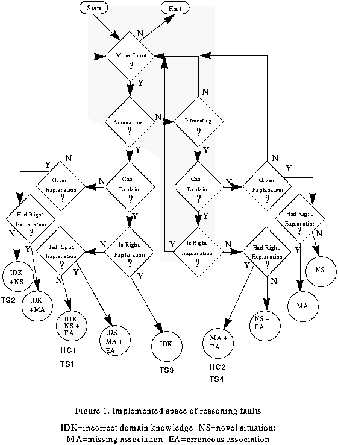 Figure 79. Implemented space of reasoning faults
When Meta-AQUA generates an explanation for an anomaly in the input story, the explanation may be incorrect. Alternatively, it may reach an impasse when trying to explain and thus not be able to generate an explanation at all. In the first case the explanation may be wrong, but the right explanation was in memory all along. If it cannot explain an anomaly, the explanation may have existed, but could not be found. All of these cases can occur both when the input is anomalous (left hand side of the figure) and when simply interesting (right hand side of the figure). An additional case occurs when Meta-AQUA explains an anomalous input correctly. It can then learn what was wrong with the knowledge such that it thought it was anomalous when actually it was not.
The circles at the bottom list the combinations of failure that occur given the situation (i.e., whether the explanation was given, etc.). The shaded circle represents the fault of the hand coded story HC1 as described in Chapters VI and VII. Annotations underneath the circles refer to stories described in previous or subsequent sections.
One may object that because these all map to a single fault, a decision tree could be built rather than going through the introspective process. However, this figure represents the conditions available only in hindsight or through the auspices of an oracle; it is a virtual flow-chart, not an actual flow of control in the program. Meta-AQUA must go through the blame-assignment process in order to determine the actual situation that applies to a given set of circumstances. For example, there is no way that the system can determine in advance that it has the right explanation in memory but failed to find it (i.e., has forgotten the explanation and so the error is missing association). A set of if-then statements will not suffice to perform blame assignment.
This set of failure combinations represents an exhaustive set of causes that can account for reasoning failure assuming correct processes, goals and input. Adding these other dimensions makes the blame-assignment task much more complex. However, we believe that deriving representations for these additional combinations will be tractable given a full analysis of the possibilities. Heuristics must developed, however, to estimate when the assignment of blame will be so difficult that metareasoning should not be pursued (see next chapter).
A number of other researchers have presented learning approaches to many of the other failure types not covered directly in the Meta-AQUA implementation, although they do not specifically consider the learning-strategy construction problem. Given this research, we can outline a number of relevant approaches to failure causes from Table 5 not covered in this implementation. Research from these areas can be used in the future to make Meta-AQUA more complete.
· Input Noise: The reasoner may possess the right knowledge, have it organized in a proper manner, and use the correct reasoning methods, yet fail due to incorrect or incomplete external knowledge sources. In reasoning tasks, the blame may be due to measurement errors, obsolete data, missing data, or explicit deception by another agent. The learning solution is to determine the conditions under which knowledge sources are reliable and the kinds of data that are necessary in a given situation (Booker, Goldberg & Holland, 1989). Data from human studies can be useful here to constrain the learning (e.g., see Johnson & Seifert, in press).
· Incorrect Reasoning Choice: This failure type occurs when the reasoner has an appropriate knowledge structure with which to reason and an index to the structure in memory, but incorrectly chooses the wrong knowledge because the reasoning method it decided to use turned out to be inappropriate or inapplicable. An analysis of the choice of reasoning methods results in learning control strategies designed to modify the heuristics (or add new heuristics) used in this choice (Mitchell et al., 1983; Sleeman, Langley & Mitchell, 1984).
· Flawed behavior / Missing behavior: The fault may occur because of incorrect procedural knowledge. Stroulia (1994) has presented an interesting metaphor that pertains directly to these failure causes. She treats a cognitive system as a device having reasoning components and models them with structure-behavior-function (SBF) models. This allows her Autognostic system to perform blame-assignment with the SBF models in the same manner that other systems diagnose physical devices in the real world. Such reflective diagnoses enables self-repair (learning).
As described by Section 8.3.3, Tale-Spin outputs a CD representation of events in the story, and a translator converts these concepts into a frame representation that Meta-AQUA understands. Often the input from Tale-Spin does not match Meta-AQUA's conceptual definitions and so the system detects an anomaly (e.g., the input dog-barks concept is anomalous because the object at which the dog barks is animate whereas the conceptual definition from which the system compares the input constrains the object slot to inanimate). However, Meta-AQUA's conceptual knowledge for these primitive representations is not the only source of incorrect domain knowledge in the system. As explained in Section 8.2, during conceptual skimming a script application mechanism interprets the primitive acts given to it by using hierarchical knowledge from scripts. Therefore, the inferences generated by these knowledge structures themselves may also contain errors that lead to failure.
For instance, consider story TS3 in Figure 80. To represent sentence S26 ("Elvis smokes pot."), Tale-Spin generates the CD primitive INGEST whose actor is Elvis and whose object is marijuana.(17) This representation itself causes no anomaly because the actors of INGEST are volitional agents and the objects may be plants. But, the script applier incorporates the INGEST into a Smoke-Pipe scene of the Smoking-Script. It then examines the Smoke-Pipe scene for interesting input (and to see if it answers any previous questions). Now because Smoke-Pipe has a constraint limiting the ingredients of pipes to be tobacco, an anomaly will result because of the knowledge in the scene's definition, not the definition of INGEST.
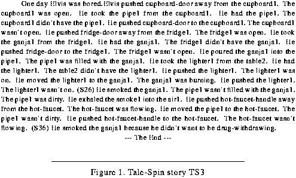 Figure 80. Tale-Spin story TS3
Following the detection of the anomaly, the system then asks why Elvis smokes the marijuana. As a consequence, Meta-AQUA will use a tobacco smoking explanation to answer why Elvis chose to perform such an action. The resultant hypothesis is that the action of smoking the pot relieves the tension of withdrawal from the effects of an addictive substance. This explanation is later confirmed in the story (at S36), so the explanation is accepted. The subsequent learning uses an IMXP called IMXP-ANOMALY-EXPLAINED to change by abstraction the constraint of the smoking scene to be any plant, rather than just tobacco (unfortunately an overgeneralization).
So although only one failure type was involved (incorporation failure) and only one learning algorithm needed (abstraction), even simple learning can be complex. The problem is complex because inference is involved rather than just matches against concepts in the BK.
Even when a system learns new concepts or changes old ones, the successful use of this information may not always occur if the BK is not organized to promote the retrieval of it when needed. The examples of Section 2.1 illustrated that, even though Meta-AQUA may learn a new explanation in one story, it can fail to reuse the explanation in a subsequent story. A retrieval impasse can occur because, given the cues that compose a probe into memory, the existing explanation can lack the proper index with which to traverse the BK and thus to find the item. In effect, Meta-AQUA can forget learned explanations and can expect instead to acquire this knowledge anew. When Meta-AQUA is given the correct old explanation, the system must be reminded of the explanation that already exists in memory. Therefore, rather than pursuing a goal to acquire and expand the knowledge, it must be able to switch to a goal of reorganizing the knowledge. That is, learning goals are not static; even a system that uses the introspective method of deciding what to learn must be prepared to change its learning goals dynamically.
Consider the earlier scenario examined in Chapters VI and VII. The hand-coded story, HC1 (also the automatically generated story, TS1), represents a particular configuration of events. In the story, a police dog barks at some luggage in an airport (or at a vase in Elvis' home in TS1). Meta-AQUA considers the event to be anomalous because the system believes that dogs bark only at animate objects. As was seen earlier, the program eventually learns that dogs can bark at any physical object, including inanimate ones. It also learns the new explanation that "dogs bark when detecting contraband." After processing HC1 (TS1), Meta-AQUA's memory contains knowledge of two explanations for why dogs bark: an explanation for dogs that bark because they are threatened (indexed by dog-barks-at-animate-object) as well as an explanation for dogs that bark because they detect contraband (indexed by dog-barks-at-container).(18)
Tale-Spin then generates story TS4 (see Figure 81) and outputs it to Meta-AQUA. In this story, Elvis and Lynn are about to play with the ball when the police arrive at the house with a canine unit. The dog immediately goes to a throw rug and sniffs at the object (S23). When the dog barks (S24) the officer pulls back the rug to find Elvis' stash of marijuana. Consequently, the officer arrests Elvis (S30) and takes him away (S32, S33). The story then informs the reader that the dog barked because it detected the contraband (S35). Because Elvis looses his freedom due to the arrest, he can no longer play ball with Lynn, and so he remains bored (the original problem that motivated the story).
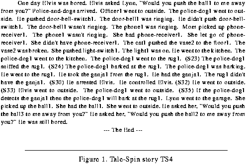 Figure 81. Tale-Spin story TS4
Immediately after the dog barks at the carpet, Meta-AQUA generates a question to explain why the dog barked (see figure Figure 82). The reason for this decision is that the system has recently learned about dogs and barking, so it is interested in any subsequent information that may be related. However, because the dog is barking at a rug and such an object is not a container, it does not retrieve the newly learned detection explanation. The dog also is not barking at an animate object, so the old threaten explanation is not retrieved. Instead, it can generate no explanation to explain the interesting story concept.
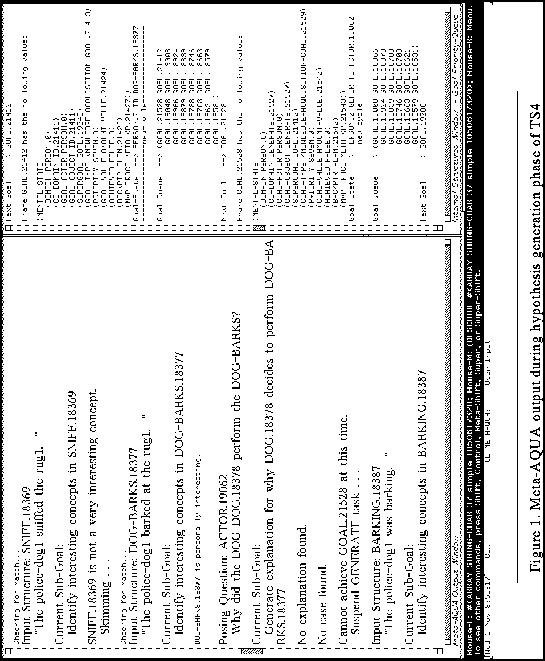 Figure 82. Meta-AQUA output during hypothesis generation phase of TS4
Reviewing the reasoning trace that preceded the conclusion, Meta-AQUA characterizes itself as "baffled" (impasse during memory retrieval). The system retrieves an IMXP based on this characterization, which helps it explain its own reasoning failure. The structure is unified with the representation of the original reasoning (stored in a TMXP) which produces the instantiation partially shown in Figure 83, "Instantiated forgotten detection explanation." The knowledge structure shows that memory retrieval produced no explanation in response to the system's question. Instead, a later input produced the answer.
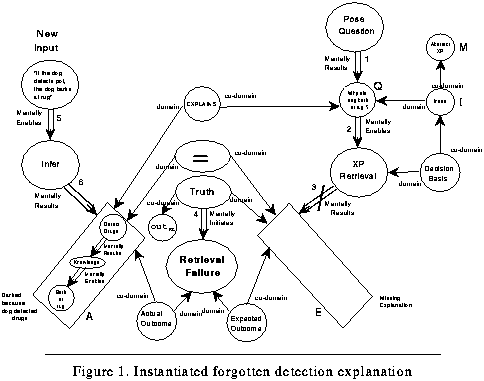 Figure 83. Instantiated forgotten detection explanation
The IMXP suggests that a knowledge-expansion goal be spawned to generalize the input explanation. This suggestion comes from the potential-learning-goal slot of the IMXP (see Figure 30., "IMXP frame definition for forgetting" on page 89). Conditions attached to the knowledge-expansion goal allow it to be posted if the node A was either acquired from the story or inferred, but not if it was retrieved from memory. A knowledge-organization goal is also spawned in order to index the generalized explanation in memory. These goals can be achieved by performing explanation-based generalization (EBG) on the new explanation (node A) and then indexing the explanation by the context in which the system encountered the explanation.
The system cannot determine a priori whether an abstract XP (node M) actually exists in memory but could not be recalled (thus, the failure cause is a missing association, I), or whether the system lacks the knowledge to produce the explanation (thus, the cause is that the situation is novel, i.e., M is missing). The system thus poses a question about its own IMXP (cf. Oehlmann, Edwards & Sleeman, 1994), "Does M exist in memory?" If M is missing, I is also missing; thus, the right question to ask is whether M exists, not I.(19)
The answer to the introspective question is obtained by performing EBG and then watching for a similar explanation in memory when it stores the new explanation via the indexing algorithm. As briefly described in Section 8.4.2 (specifically see page 194), the system can detect the presence of similar memories by maintaining a list of pointers to memory items for each conceptual type. At storage time, Meta-AQUA traverses the list, checking each to see if it can unify the new memory with any of the older ones.(20) Meta-AQUA thus finds the explanation produced by the previous story (see Figure 84).
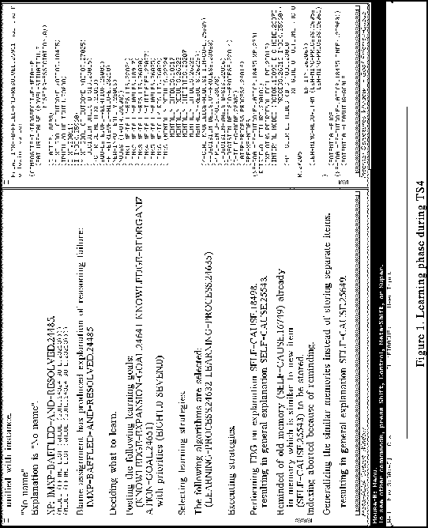 Figure 84. Learning phase during TS4
Merging the two explanations produces a better explanation: Dogs may bark at objects that hide contraband, not just at containers that hold contraband. The algorithm that indexes the generalization searches for the common ancestor of the object slots of both explanations; that is, objects that contain other objects and objects that cover other objects. This common ancestor is the type hiding-place. Thus, so that these types of explanations will not be forgotten again, the system indexes the explanation by "dogs that bark at potential hiding places" and places a pointer to the merged explanation on the memory list for the symbol causal-relation.
As a result of its learning, Meta-AQUA not only detects no anomalies in stories such as HC3 (Figure 85), it predicts the correct explanation in S7 while processing S5. Most importantly, however, this story illustrates the fact that learning goals are not static, but rather, that they are subject to dynamic re-evaluation, even when the planner that creates a learning plan knows about interactions. Some facets that bear on the pursuit of learning goals cannot always be anticipated in advance. In this case, the system had decided that it needs to acquire a new piece of knowledge, but instead it discovers that it had the knowledge all along. So instead of achieving a knowledge expansion goal to generalize and store what it thinks is a new explanation, it rediscovers the old one and changes the learning goal to a knowledge organization goal.
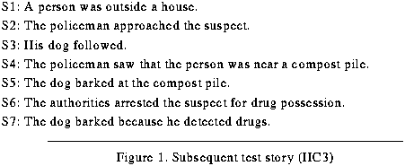 Figure 85. Subsequent test story (HC3)
This chapter described the Meta-AQUA implementation including the four major subsystems (not including the frame representation system). These are the performance subsystem, the input subsystem, memory, and the learning subsystem. The performance system is story understanding. Among new implementational details this chapter discussed concerning the performance system was the script application module and its implication for learning about higher-order knowledge. The input system not only provides hand-tailored stories as seen in previous chapters, but, as introduced in this chapter, it also includes an automatic story generator called Tale-Spin. The memory system is an indexed memory divided into the BK and FK. An important feature of the memory is that opportunistic remindings are supported so that multiple hypothesis formations and verifications can be interleaved within a series of inputs. We also saw that Meta-AQUA can benefit from learning in a particular story before the story is even finished.
This chapter also reintroduced the learning subsystem. When discussing the learning system, an example of forgetting illustrated a number of points. First, forgetting can occur when the indexes for items are poorly organized in memory. Secondly, and more importantly, even if it knows about interactions between learning methods, the learning system must be prepared to change dynamically the learning goals being pursued. Finally, the example demonstrated the utility of introspective questions.
Markovitch and Scott (1993) characterize learning systems in terms of filters placed in an information flow through a system. Meta-AQUA possesses an input bias at the front end in the information flow; that is, the bias is to prefer failed experience. Markovitch and Scott call such a filter selective experience. They divide selective experience into three types: error-based, uncertainty-based, and miscellaneous heuristics. The examples presented in this thesis are all error-based, although the scope of the selective-experience filter in Meta-AQUA goes beyond their formulation because, as explained in Chapter III, error has numerous variations, only one of which (contradiction) Markovitch and Scott consider. Moreover, they claim that error-based filters are useful only when the input is in the form of problem/solution tuples. During the impasse of story TS4 (Section 8.5.4), however, Meta-AQUA generates no solution, yet the system was still able to learn a valuable lesson from the experience.
Meta-AQUA filters input examples in a relatively passive manner. It waits for failures to occur, then processes them by explaining the failure, deciding what to learn, and constructing a learning strategy. Another issue to pursue would be to have the system try to actively generate failed experiences in order to test or disprove some hypothesis or to generate learning experiences for some performance task. As Appendix A asserts, however, the system must be sensitive to inductive policies concerning the task domain. Currently, the ability of a system to actively challenge itself and its knowledge is beyond the scope of our research.
With the implementational details presented by this chapter in hand, the next chapter can now examine how the total system is evaluated in an empirical study of the benefits of introspective multistrategy learning.
Table of Contents
 Next Chapter
Next Chapter